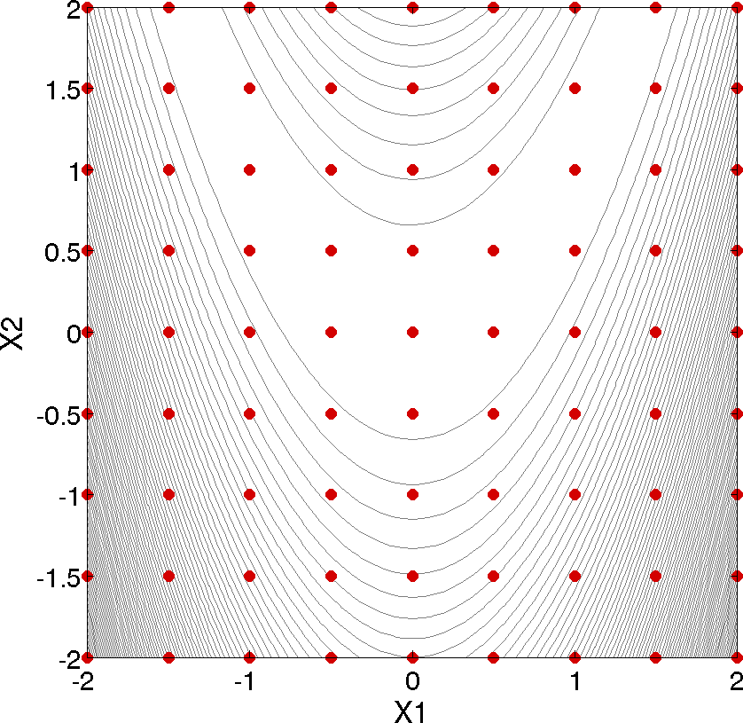

Tutorial: Your First Dakota Study
In this tutorial you run three different Dakota studies: with a function built into Dakota (a direct interface), with the same function run as a black-box simulation through an analysis driver, and with the same analysis driver but changing the method.
Prerequisites: Dakota installed, with its bin folder on your PATH
(see Installation and Setting Your Environment).
For Part B you also need Python 3, with Dakota’s Python folder on your
PYTHONPATH.
The example throughout is Rosenbrock’s function of two variables, x1 and
x2. If you haven’t been introduced to it yet, see The example: Rosenbrock.
Every input file below is shown in both of Dakota’s input formats. Choose the JSON or Freeform tab, and the whole page follows your choice.
Part A: Run a built-in example
Check that Dakota runs. This command prints Dakota’s version:
dakota -vCreate an empty folder for this part, and open a terminal in it.
Create the input file:
Save this as
rosen_multidim.json:{ "environment": { "tabular_data": { "tabular_data_file": "rosen_multidim.dat" } }, "method": [ { "multidim_parameter_study": { "partitions": [8, 8] } } ], "model": [ { "single": {} } ], "variables": [ { "continuous_design": { "count": 2, "descriptors": ["x1", "x2"], "lower_bounds": [-2.0, -2.0], "upper_bounds": [2.0, 2.0] } } ], "interface": [ { "analysis_drivers": { "drivers": ["rosenbrock"], "interface_type": { "direct": {} } } } ], "responses": [ { "gradient_type": { "no_gradients": true }, "hessian_type": { "no_hessians": true }, "response_type": { "response_functions": { "count": 1 } } } ] }
Copy
rosen_multidim.infrom theshare/dakota/examples/users/folder of your Dakota installation, or save this asrosen_multidim.in:# Dakota Input File: rosen_multidim.in # Usage: # dakota -i rosen_multidim.in -o rosen_multidim.out > rosen_multidim.stdout environment tabular_data tabular_data_file = 'rosen_multidim.dat' method multidim_parameter_study partitions = 8 8 model single variables continuous_design = 2 lower_bounds -2.0 -2.0 upper_bounds 2.0 2.0 descriptors 'x1' "x2" interface analysis_drivers = 'rosenbrock' direct responses response_functions = 1 no_gradients no_hessians
It describes an 81-point grid study of Rosenbrock’s function, using the copy of the function built into Dakota. Anatomy of a Dakota Study explains each block.
Run Dakota:
dakota -json rosen_multidim.json -o rosen_multidim.out > rosen_multidim.stdoutdakota -i rosen_multidim.in -o rosen_multidim.out > rosen_multidim.stdout
What happened
Dakota ran Rosenbrock’s function 81 times and wrote four files:
rosen_multidim.stdout: Dakota’s progress messages, which would otherwise appear on the screen.rosen_multidim.out: details of each evaluation, and a summary at the end.rosen_multidim.dat: the tabular data file, with one row per evaluation. Its first rows are:%eval_id interface x1 x2 response_fn_1 1 NO_ID -2 -2 3609 2 NO_ID -1.5 -2 1812.5 3 NO_ID -1 -2 904
dakota.rst: a binary restart file. If a study is interrupted, Dakota can use it to continue without repeating finished evaluations.
The 81 points form a 9 × 9 grid over the range of x1 and x2:


Fig. 6 The points evaluated by the grid study.
You can open the tabular data file in a spreadsheet or plotting tool to explore the results. Dakota Output describes all of Dakota’s output files.
Part B: The same problem as a black box
Now run the same study, but Dakota treats Rosenbrock’s function as a black box: a separate program that reads an input file and writes an output file, like an engineering simulation code. Dakota connects to it through an analysis driver. Connecting Your Code: The Analysis Driver explains the ideas behind each step.
Create a new, empty folder for this part, open a terminal in it, and copy in the black-box simulation and its input template from your Dakota installation:
cp <install_dir>/share/dakota/examples/official/drivers/bash/templatedir/* .Copy-Item "<install_dir>\share\dakota\examples\official\drivers\bash\templatedir\*" .
Replace
<install_dir>with the folder where you installed Dakota. You now have two files:rosenbrock_bb.py, the simulation. It reads an input deck,ros.in, and writes a log,ros.out.ros.template, a copy of the input deck with{x1}and{x2}where the variable values go.
Save one of these analysis drivers in the same folder, as
driver.py,driver.shordriver.ps1:This version uses Dakota’s
dakota.interfacingPython module to read the parameters file, fill in the template, and write the results file.#!/usr/bin/env python3 # Analysis driver for the black-box Rosenbrock example. # Dakota runs it as: python3 driver.py params.in results.out import subprocess import sys import dakota.interfacing as di # Read the parameters file Dakota wrote, and set up the results file. params, results = di.read_parameters_file() # -------------- # PRE-PROCESSING # -------------- # Put this evaluation's x1 and x2 into the simulation's input file. di.dprepro(template="ros.template", parameters=params, output="ros.in") # --------- # EXECUTION # --------- subprocess.run([sys.executable, "rosenbrock_bb.py"], check=True) # --------------- # POST-PROCESSING # --------------- # Find the function value in the simulation's output, and return it to # Dakota as the first (and only) response. with open("ros.out") as f: for line in f: if "Function value" in line: value = float(line.split("=")[1]) results[0].function = value results.write()
This version uses the
dpreprocommand to fill in the template, andgrepandawkto find the value in the output.#!/usr/bin/env bash # Analysis driver for the black-box Rosenbrock example. # Dakota runs it as: driver.sh params.in results.out params=$1 results=$2 # -------------- # PRE-PROCESSING # -------------- # Put this evaluation's x1 and x2 into the simulation's input file. dprepro "$params" ros.template ros.in # --------- # EXECUTION # --------- python3 rosenbrock_bb.py # --------------- # POST-PROCESSING # --------------- # Find the function value in the simulation's output, and return it to # Dakota as the first (and only) response. grep 'Function value' ros.out | awk '{print $4}' > "$results"
Note
dpreproruns with thepythoncommand. If your system has onlypython3, usedprepro3instead, which runsdpreprowithpython3.This version runs
dpreprowith Python to fill in the template, and usesSelect-Stringto find the value in the output.# Analysis driver for the black-box Rosenbrock example. # Dakota runs it as: powershell.exe -File driver.ps1 params.in results.out $params = $args[0] $results = $args[1] # -------------- # PRE-PROCESSING # -------------- # Put this evaluation's x1 and x2 into the simulation's input file. $dprepro = (Get-Command "dprepro").Path python3 $dprepro $params ros.template ros.in # --------- # EXECUTION # --------- python3 rosenbrock_bb.py # --------------- # POST-PROCESSING # --------------- # Find the function value in the simulation's output, and return it to # Dakota as the first (and only) response. $line = Select-String -Path ros.out -Pattern "Function value" $value = ($line.Line -split "=")[1].Trim() Set-Content -Path $results -Value $value -Encoding ASCII
On Linux and macOS, make a Bash driver executable with
chmod +x driver.sh.Test the analysis driver by hand. Save this sample parameters file as
params.in. It is what Dakota writes for the first evaluation, wherex1andx2are both -2:2 variables -2.000000000000000e+00 x1 -2.000000000000000e+00 x2 1 functions 1 ASV_1:response_fn_1 2 derivative_variables 1 DVV_1:x1 2 DVV_2:x2 0 analysis_components 1 eval_idThen run your analysis driver on it:
python3 driver.py params.in results.out./driver.sh params.in results.outpowershell.exe -File driver.ps1 params.in results.outLook at the files the driver created:
ros.in: the template, with -2 filled in for both variables;ros.out: the simulation’s log, including the lineFunction value = 3.6090000000000000e+03;results.out: the value 3609, ready for Dakota.
If something goes wrong, see Test your analysis driver before running Dakota.
Create the input file. It is the same as Part A’s, except for the highlighted interface block, which now runs your analysis driver:
Save this as
rosen_blackbox.json:{ "environment": { "tabular_data": { "tabular_data_file": "rosen_multidim.dat" } }, "method": [ { "multidim_parameter_study": { "partitions": [8, 8] } } ], "model": [ { "single": {} } ], "variables": [ { "continuous_design": { "count": 2, "descriptors": ["x1", "x2"], "lower_bounds": [-2.0, -2.0], "upper_bounds": [2.0, 2.0] } } ], "interface": [ { "analysis_drivers": { "drivers": ["python3 driver.py"], "interface_type": { "fork": {} } } } ], "responses": [ { "gradient_type": { "no_gradients": true }, "hessian_type": { "no_hessians": true }, "response_type": { "response_functions": { "count": 1 } } } ] }
Save this as
rosen_blackbox.in:environment tabular_data tabular_data_file = 'rosen_multidim.dat' method multidim_parameter_study partitions = 8 8 model single variables continuous_design = 2 lower_bounds -2.0 -2.0 upper_bounds 2.0 2.0 descriptors 'x1' 'x2' interface analysis_drivers = 'python3 driver.py' fork responses response_functions = 1 no_gradients no_hessians
If you saved the Bash or PowerShell driver, change the
analysis_driversvalue to'driver.sh'or'powershell.exe -File driver.ps1'.Run Dakota:
dakota -json rosen_blackbox.json -o rosen_blackbox.out > rosen_blackbox.stdoutdakota -i rosen_blackbox.in -o rosen_blackbox.out > rosen_blackbox.stdoutCompare
rosen_multidim.datin this folder with the one from Part A. The values are the same: Dakota ran the black-box simulation 81 times through your analysis driver, and got the same answers as the built-in function.
Part C: One interface, many methods
Your analysis driver works with any Dakota method. In the Part B folder, replace the method block of your input file with this one, and leave everything else unchanged:
{
"method": [
{
"sampling": {
"samples": 20,
"seed": 52983
}
}
]
}
method
sampling
samples = 20
seed = 52983
Run Dakota again with the same command as in Part B. Instead of a grid,
sampling runs 20 points spread through the range of x1
and x2 by Latin hypercube sampling. The new rosen_multidim.dat has 20
rows. Fixing the seed makes the points the same each time you run.
You changed the method without touching your code or your analysis driver. That is the main idea behind Dakota: build one interface, then use many methods. To see which methods Dakota offers, and which questions each kind of study answers, see Study Types.
Next steps
"Getting Started" Examples runs more studies on Rosenbrock’s function, including optimization.
The cantilever beam example is a more realistic engineering problem, with several responses.
To connect your own code, start from your analysis driver in Part B, and see Connecting Your Code: The Analysis Driver.
Video Resources
Next: Study Types